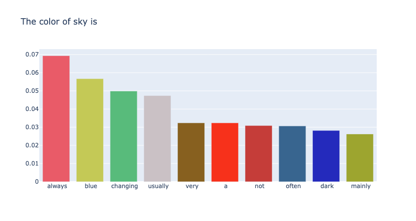

Autoregressive Decoding: Basic Manner of Decoder-Only LLMs
Feb. 25, 2025 · Qiyao Wang · Topic #Decoding
Transformers 架构的语言模型主要包含两大类，即以 BERT 为代表的 Encoder-Only 的 LM 和以 GPT 为代表的 Decoder-Only 的 LM。当前的 LLM 以 Decoder-Only 架构作为其骨架，在此基础上，以自回归（Autoregressive）的方式以 Next Token Prediction 任务在大规模语料上进行预训练。
自回归机制简单来说，即模型无法看到当前时间步 timestep 之后的数据内容，而是需要以预测的形式向后延伸。在自回归解码中，大模型的最后一层 Transformer 层的 MLP 的维度与词表大小 $|V|$ 相一致，该层 MLP 则用来表征最后的预测词表分布，此时的 MLP 的原始输出被称为 logits。在 logits 的基础上，应用 softmax 函数，得到词表中各个词语的离散概率分布。解码策略此时会起作用，通过从词表的离散概率分布中进行采样，选择最后输出的下一个 token。
给定序列 $\mathbf{x} = (x_1,x_2,\dots,x_T)$，在时间步 timestep $t$ 时，模型仅可见 $x_1,x_2,...,x_{t-1}$ 这些 token，而 $x_{t},...,x_T$ 不可见，通过 attention mask 进行掩码。以公式的形式表示自回归模型的计算方式，如下式所示
$$ \begin{aligned} p(\mathbf{x})&=p(x_1)\cdot p(x_2\mid x_1)\cdots p(x_T\mid x_{T-1},x_{T-2},...,x_{1})\\ &=\prod_{t=1}^Tp(x_t\mid x_{< t}) \end{aligned} $$deco repository
Note: All codes will be uploaded at deco.
所有的代码将基于 torch 和 transformers 进行实现，其中 python 版本为 3.10，可以通过 pip install vllm==0.7.3 来快速构建相关依赖。
本节的 Jupyter Notebook。
Code
由于自回归解码其实是大模型运行机制的一个基础，还未涉及真正的解码的选择策略，本代码只包含对下一个 token 的预测。需要注意的是，并未细节的写入 model 的推理过程，如对输入序列的掩码操作等。
import torch
import plotly.graph_objects as go
from transformers import AutoTokenizer,AutoModelForCausalLM
class Sampler:
def __init__(self, model_name: str="Qwen2.5-0.5B") -> None:
self.device = 'cuda' if torch.cuda.is_available() else 'mps' if torch.backends.mps.is_available() else 'cpu'
self.tokenizer = AutoTokenizer.from_pretrained(model_name)
self.model = AutoModelForCausalLM.from_pretrained(model_name).to(self.device)
def encode(self, text: str):
return self.tokenizer.encode(text, return_tensors="pt").to(self.device)
def decode(self, ids: torch.Tensor):
return self.tokenizer.decode(ids)
def get_next_token_prob(self, input_ids:torch.Tensor):
# 禁止计算图中梯度的计算
with torch.no_grad():
logits = self.model(input_ids=input_ids).logits
# 在此之前，logits 形状为 torch.Size([1, 1, 151936])
# 获得 Tensor 的最后一维度 torch.Size([151936])
logits = logits[0, -1, :]
probs = torch.softmax(logits, dim=-1)
return probs
def plot_scores(self, scores, title, k):
"""
:param scores: 排序对象
:param title: 图片标题
:param k: 展示的数量
:return: None
"""
top_indices = torch.argsort(scores, descending=True)[:k]
tokens = [self.decode(idx) for idx in top_indices]
if self.device == "cpu":
top_probs = scores[top_indices].numpy()
else:
top_probs = scores[top_indices].cpu().numpy()
colors = ['#E95B68', '#C4C956', '#58BB7B', '#CAC1C5', '#87601F', '#F7311B',
'#C53D39', '#38658F', '#242ABC', '#9DA52F', '#329018', '#D415C5',
'#6DCE59', '#ADF212', '#9CF042']
colors = colors[0: len(top_indices)]
fig = go.Figure(
data=[
go.Bar(x=tokens, y=top_probs, marker_color=colors, textposition="inside")
]
)
fig.update_layout(title=title)
fig.show()
def inference(self, text: str):
input_ids = self.encode(text)
next_token_prob=self.get_next_token_prob(input_ids)
self.plot_scores(next_token_prob, text, k=10)
输入："the color of sky is" 来预测下一个单词
sampler = Sampler("Your model path")
text = "The color of sky is"
sampler.inference(text)
如图1所示，其中 token 分布的第一个为 "always"，其概率为0.0693。

Reference
Contact
There may be some errors present. If you find any, please feel free to contact me at wangqiyao25@mails.ucas.ac.cn. I would appreciate it!